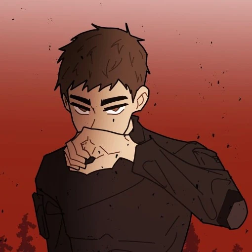

Ben Clark is a protagonist in School Bus Graveyard. He debuted in Episode 1, and is known for being quiet.
Ben is a quiet boy. He seems to have a good heart, often caring for his friends. Ben used to be known as a gentle giant who loved to sing. However, that changed after Shane, one of Ben's bullies, choked him to the point of voice box damage. After this incident, he became selectively mute and got into street fighting to tale out the anger he has for Shane, which eventually led to him fighting (And winning) against a boy related to a gang member. Due to this, he and his family ended up in danger- Which caused Ben to have to move in with his cousin's family. He can roughly speak, he just dislikes his voice, so he doesn't. He tends to listen to music often, enjoying it, whilst also attempting to avoid anything that may trigger trauma or an anger meltdown. He carry a sketchbook around. His therapist told him to carry it with the intent to draw and release any anger he may inhabit, but he instead uses it to write his thoughts and express them to the group without speaking.
Ben Clark is a tall boy, standing at 6'0. He has tan skin and light brown eyes, with thick black eyebrows. He has short spiked hair that is greyish brown in color. He's usually seen wearing the same dark grey shirt and a pair of jeans. In the phantom dimension, he can be seen wearing the black protective suit that was purchased by Aiden.